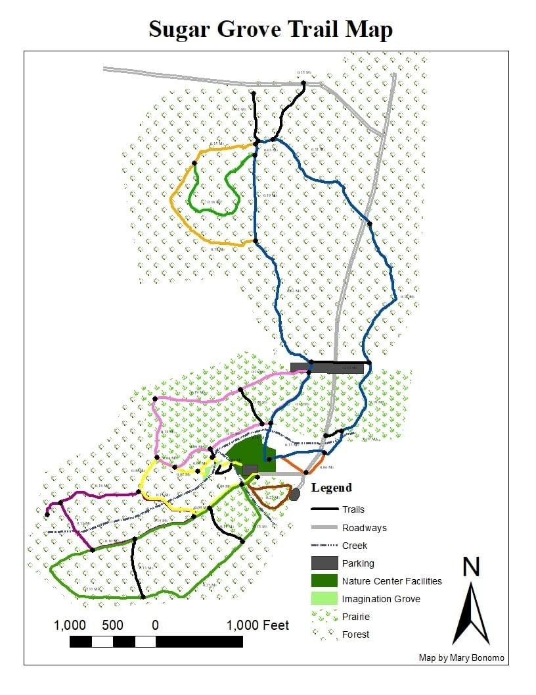

I am an enthusiastic computer programmer with a particular interest in anything that involves turning data into visuals. In particular, I have had an interest in Geographic Information Systems (or GIS).

The map you are currently seeing is the result of the main project for my internship at Illinois State University. Every colored line on this map is the result of me going out onto the trail, stopping only to take note of my coordinates on a Garmin GPS unit inputting each of those hundreds of points into an excel file, importing that file into ArcGIS and using ArcGIS to digitize these points into a readable map. It was slow going, but I loved the process and enjoyed every minute of it (even when the mosquitoes were eating me)!